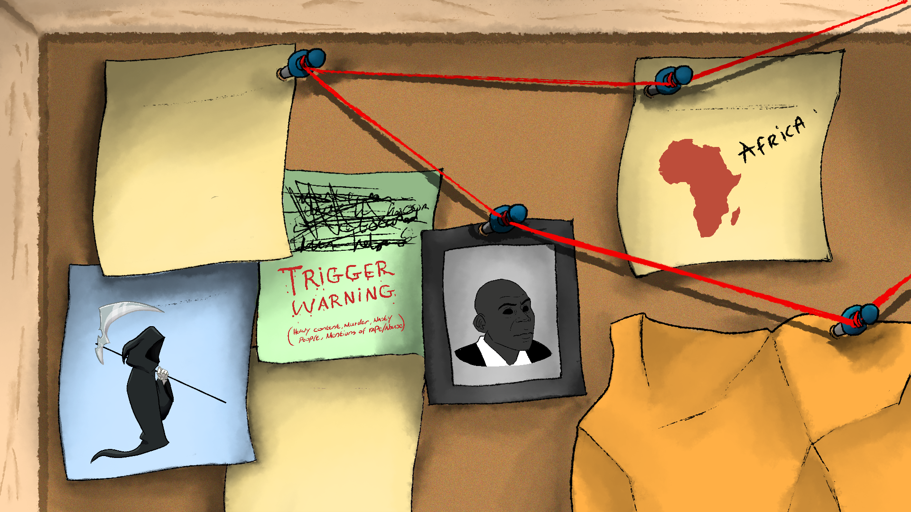

Madumetsa Jack Mogale (born 1968), dubbed the West-End Serial Killer by police, is a South African serial killer who killed 16 people in 2008 and 2009. On 17 February 2011, Mogale was convicted on 52 of 61 charges related to 16 murders, 19 rapes, and 9 kidnappings.
Mogale committed his crimes near his residence in Westonaria and Lenasia, south of Johannesburg. Two women who survived being attacked by him testified at trial that he had claimed to be a Zion Christian Church (ZCC) preacher and a prophet. he was sencteced 16 life times without chance of parol.
Africa:
143586 people
Nigeria: 64201 people
South Africa: 20336 people
Congo: 10322 people
Ethiopia: 7552 people
Uganda: 4497 people